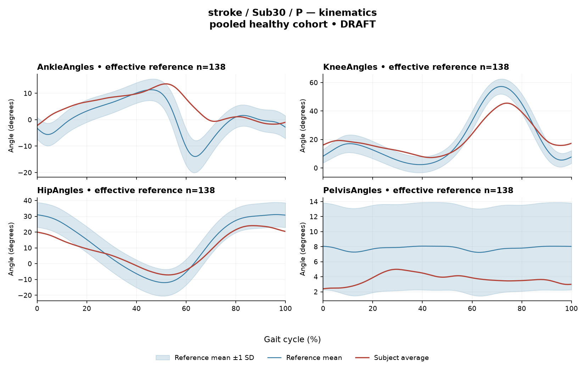

rater1 / Report 56 of 105 / Review spreadsheet row 57
R35A2ECF06979D30D
Case: stroke_Sub30_P
Read this report independently. Record judgments in the workbook. Browser pages do not save ratings.
Report: exact saved text
# Gait Report — Interpretation for Research/Clinical Review **Subject:** Sub30_P **Group:** stroke **Side reported:** paretic **Interpretation version:** limited-evidence-v3.1-candidate *Scope: limited-evidence interpretation of a supplied quantitative summary. Not a diagnosis, not a treatment recommendation.* --- ## 1. Objective Findings **Participant and data provenance.** This participant is a member of the stroke cohort, and all findings below describe the **paretic** side. The analysis cycle runs from one initial contact of the paretic limb (0%) to the next initial contact of the same limb (100%); these are two successive occurrences of the same event, not a single instant. **No intermediate gait event (including individual toe-off) and no matched muscle-specific timing reference are supplied in this task**, so every temporal statement below is expressed as a percentage of the analysis cycle only. Percentages are not assigned to stance, swing, loading response, mid-stance or pre-swing, and no conventional 60/40 split is applied. **Spatiotemporal values as supplied.** - Gait speed **0.43 m/s**, falling in the "limited community ambulator (0.4–0.8 m/s)" band. This label denotes a speed band only; it does not measure walking independence, safety, or real-world community mobility. - Cadence **76.0 steps/min**. No cadence reference is supplied, so this value is reported without comparison. - Step length symmetry index **+10.6%**, computed with the **successive-footfall** definition. By the stated sign convention (negative = shorter paretic step), a positive value indicates the **paretic step is the longer of the two** under this index. The summary notes that an instantaneous-heel-position definition exists and yields different values for some subjects; that alternative value is not supplied here, so the magnitude should be read as definition-dependent. **Critical reference-comparability limit.** The healthy reference cohort's self-selected speeds span 0.80–1.79 m/s. At **0.43 m/s this subject falls below that floor, so no speed-matched healthy reference exists in this dataset.** Any deviation reported in Sections 2–3 therefore conflates slow-walking effects with stroke-related control changes, and these two contributions cannot be separated from these data. The kinematic reference actually used is **138 pooled healthy subjects (1001 phase points, main_cohort_excel)** — pooled across body sides and ages, not age- or speed-matched, and not a leave-one-out estimate. Consequently, a deviation from this reference does not by itself establish a disease effect, a stroke-specific mechanism, or a clinical diagnosis; equally, agreement with the reference would not establish normal physiology. **Channels available and not available.** - Supplied: sagittal-plane ankle, knee, hip and pelvis angles (ROM and Gait Variable Scores); averaged EMG envelopes for GAS, RF, VL, BF, ST, TA, ERS; two co-contraction indices. - **Not supplied in this input** (not to be described as absent from the source release): age, sex, gait-event timings, time post-stroke, stroke clinical scores, non-paretic-side data for comparison, stride-level variability, raw-signal quality checks, and expert visual plots. - **Not applicable / out of scope by design:** coronal- and transverse-plane kinematics are not part of this dataset extraction; all angular values are sagittal only. - A dataset-level audit note states that 614 of 700 muscle combinations were evaluable and 86 lacked valid nonzero paired samples. This is a cohort-level statement; **the summary does not indicate that any of this subject's seven channels were among the non-evaluable combinations**, and all seven returned envelope metrics here. --- ## 2. EMG Envelope and Threshold Findings **How these numbers must be read.** The released curves are **ensemble-averaged envelopes**. For this participant, normalization used a shared maximum across available strides before averaging, with a denominator that is participant-, side- and muscle-specific (not shared between sides). Amplitudes are therefore **relative envelope values** — they are not neural activation, force or strength, they cannot be ranked across muscles as "stronger/weaker," they cannot be compared to the non-paretic side, and an averaged curve cannot establish stride-to-stride variability. Detected intervals are properties of the **mean envelope** under a **20%-of-that-curve's-own-peak threshold with a 3%-of-cycle minimum retained duration**. They are not physiological onsets, offsets, contraction durations or proof of inactivity outside the intervals, and a pattern seen in the mean curve should not be assumed present in every individual stride. An interval written X%–Y% with X > Y remains above threshold across the 0%/100% cycle-defining boundary. | Muscle | Retained interval(s) (% cycle) | Coverage | Boundary continuity (mean envelope) | Peak norm. amplitude | Max \|z\| vs reference (location) | |---|---|---|---|---|---| | GAS | 91–67 (wraps) | 78% | above threshold across boundary | 0.31 | 6.5, **above** reference mean at 56% | | RF | 51–56; 82–85; 90–94; 97–49 (wraps) | 65% | above threshold across boundary | 0.40 | 3.8, **below** reference mean at 6% | | VL | 54–57; 89–48 (wraps) | 64% | above threshold across boundary | 0.43 | 3.0, **above** reference mean at 30% | | BF | 35–46; 48–51; 52–62; 63–34 (wraps) | 95% | above threshold across boundary | 0.32 | 2.2, **above** reference mean at 56% | | ST | 36–44; 48–61; 77–32 (wraps) | 79% | above threshold across boundary | 0.54 | 3.7, **above** reference mean at 54% | | TA | 10–7 (wraps) | 98% | above threshold across boundary | 0.43 | 3.4, **above** reference mean at 40% | | ERS | 0–100 (single interval spanning the full analysis window) | 100% | above threshold across boundary | 0.41 | 2.2, **below** reference mean at 51% | **Interval and coverage description.** All seven averaged envelopes contain a retained interval that crosses the cycle-defining initial-contact boundary, i.e. at the mean-envelope level the signal does not drop below the 20% criterion at that boundary for any recorded muscle. Coverage values are high throughout (64–100%). Multiple short retained intervals appear for RF, VL, BF and ST in the mid-cycle region (roughly 35–62%), separated by gaps that did not meet the 3% retention rule or fell below threshold; these fragment boundaries are properties of the averaged curve and the retention rule, not evidence of discrete physiological bursts. For ERS the detection returned one interval spanning 0%–100% with 100% coverage, which is a statement about the mean envelope under this threshold; it does not establish continuous contraction, and the displayed coverage is rounded. For the remaining muscles, the reported coverage below 100% indicates that at least some portion of the averaged curve did not meet the criterion, but the precise sub-threshold extent is not resolvable from rounded coverage values alone, and nothing here establishes muscular inactivity in those regions. **An onset written as 0% (ERS) is the analysis-window boundary, not a physiological onset.** No interval is mapped to clearance, push-off or weight acceptance, and no timing is labelled early, delayed or prolonged, because the evidence required for such labels (individual toe-off, matched muscle-specific normal timing) is not supplied. **Max |z| values.** Max |z| is an **extreme-value statistic** — the single largest standardized difference across all 1001 phase points relative to the phase-specific reference mean and SD — not a single-observation z-score. In this dataset every one of 109 healthy controls exceeds |z| = 2 on at least one muscle, and the per-muscle healthy 95th percentiles for this statistic run from 3.65 (ERS) to 4.61 (TA), higher still under leave-one-out. The conventional 2-SD rule therefore must not be used here. - **GAS (6.5)** exceeds the highest per-muscle 95th percentile in the supplied range (4.61), so it is above the healthy 95th percentile regardless of which muscle-specific value applies. This is the largest standardized difference for this subject; its location (56%) marks where the curve differs most from the reference mean, **not** the location of peak envelope amplitude and not a gait event. - **VL (3.0)** and **BF (2.2)** fall below the lowest supplied per-muscle 95th percentile (3.65) and are therefore below the healthy 95th percentile on any of these per-muscle criteria. **TA (3.4)** is below its own stated 95th percentile of 4.61; **ERS (2.2)** is below its own stated value of 3.65. - **RF (3.8)** and **ST (3.7)** lie inside the 3.65–4.61 band of per-muscle 95th percentiles, and the specific percentile for these two muscles is not supplied — they cannot be classified as inside or outside the healthy range from this input. - "Above/below reference" in the table means relative to the **phase-specific reference mean** at that location (RF and ERS below, the rest above), not relative to a healthy percentile limit. All of these comparisons inherit the speed- and matching limitation described in Section 1. **Co-contraction indices.** CCI here is the Falconer–Winter index over the **full continuous normalized envelopes across the whole cycle** (2 × common area / summed areas). It is a whole-cycle overlap index of envelope shape; it is not simultaneous activation time, not muscular force, not phase-specific, and it can be non-zero even when detected intervals do not overlap because sub-threshold activity contributes. It is also dependent on this normalization and envelope pipeline, so values and thresholds from other studies or algorithms do not transfer. - **TA vs GAS = 0.71**, compared with the supplied healthy reference median 0.39 (2.5th–97.5th percentile 0.24–0.59). This value lies **above the upper endpoint** of that empirical interval. - **RF vs BF = 0.72**, compared with the supplied healthy median 0.68 (interval 0.48–0.83). This value lies **within** that interval, slightly above the median and well inside both endpoints. Being outside the empirical interval (TA–GAS) does not establish pathological co-activation, spasticity, stiffness or impaired motor control; being inside it (RF–BF) does not establish physiologically normal co-activation or normal muscle function. Both comparisons use a pooled, unmatched reference and inherit the speed limitation above. --- ## 3. Kinematic and Reference Comparisons All values are **sagittal plane only**; no coronal or transverse data are included, so no statement can be made about frontal- or transverse-plane motion. | Channel | Sagittal ROM | Gait Variable Score | |---|---|---| | Ankle | 15.8° | 6.81 | | Knee | 38.2° | 7.20 | | Hip | 31.2° | 6.53 | | Pelvis | 2.6° | 4.14 | | **Composite (GPS-like, RMS of the above)** | — | **6.29** | **Composite score.** The GPS-like composite is the RMS of the per-joint Gait Variable Scores over the supplied sagittal channels; it is **not** the validated 9-variable GPS. At **6.29** it is above the supplied healthy median of 5.1 and below the supplied 95th percentile of 10.7. GVS and the composite are **summary magnitude differences** from the reference mean curve: they do not indicate the direction of the waveform difference (e.g. more flexion vs more extension), do not localize the difference to any part of the cycle, and do not identify a mechanism. **Per-joint scores.** Among the four channels the knee GVS (7.20) is the largest and the pelvis GVS (4.14) the smallest, with ankle and hip intermediate. **No per-joint GVS reference values are supplied**, so none of these four can be classified as inside or outside a normal limit; only the composite has a supplied comparison, and that comparison uses the pooled 138-subject reference, which is not a matched leave-one-out normal limit and is not speed-matched to a 0.43 m/s walker. **ROM.** The ROM figures are reported as measured. ROM alone does not establish a clinical restriction in the absence of an appropriate matched comparison, and none is supplied for these joints — this applies to the small sagittal pelvic excursion (2.6°) as much as to the distal joints. Taken together, the kinematic summary documents a measurable overall difference from the pooled healthy reference of moderate magnitude relative to that reference's own distribution, without establishing a disease effect, a severity grade, or a clinical diagnosis. --- ## 4. Questions for Further Clinical Assessment These are open questions raised by the limits of the supplied data. None presupposes that the mechanism or measurement issue in question has been observed, and none implies a treatment. 1. Are **individual gait-event timings** (paretic toe-off, contralateral events) available in the wider release for this participant? Without them, none of the reported envelope intervals or max |z| locations can be related to stance/swing or to any functional sub-phase. 2. Is a **speed-matched or slow-walking healthy comparison** obtainable, given that 0.43 m/s lies below the 0.80 m/s reference floor? Absent one, the degree to which the reported EMG and kinematic deviations reflect walking speed rather than stroke-related control cannot be determined from these data. 3. Are **non-paretic-side envelopes and CCIs** available? Because the normalization denominator is side-specific in this release, any between-side comparison would need explicit handling of that constraint before it could be interpreted. 4. Would **stride-level (non-averaged) envelope data** be retrievable? The present curves are ensemble averages and cannot speak to stride-to-stride consistency, nor to whether the wrap-around above-threshold pattern seen in the mean envelope is present in individual strides. 5. Is any documentation of **raw-signal quality** available for the seven channels (electrode placement, crosstalk between adjacent muscles such as GAS/soleus complex or VL/RF, baseline noise, movement artefact)? Sustained high coverage and boundary continuity in an averaged envelope can arise from signal-quality factors as well as from motor behaviour, and these data do not distinguish the two. 6. Does the release contain **per-muscle healthy 95th-percentile values for RF and ST** specifically? Their max |z| values (3.8 and 3.7) fall inside the 3.65–4.61 band of per-muscle percentiles and cannot be classified without the muscle-specific figure; leave-one-out limits, if available, would be the more appropriate criterion. 7. Would recomputing step-length symmetry under the **instantaneous-heel** definition change the +10.6% value materially for this subject, and which definition is preferred for the intended comparison? 8. Are **age, sex, time post-stroke and clinical assessment scores** retrievable for this participant? They are not part of this input and would be needed before any of the above numbers could be placed in a clinical context. 9. Would **coronal- and transverse-plane kinematics**, and a **validated full GPS** rather than this sagittal-only GPS-like composite, be obtainable? The present composite is restricted to four sagittal channels. *All interpretive statements above are restricted to the supplied summary. Comparisons with the pooled healthy reference describe numerical differences only and do not establish normality, abnormality, a disease effect, or a clinical diagnosis for this participant.*
Requirements for this report
Fill the corresponding Coverage rows in the workbook. G03 is included once. These are the approved requirements, not prefilled judgments.
| Excel row | ID | Required content | Components / optional content |
|---|---|---|---|
| 288 | R103 | Describe walking speed 0.43 m/s and that it is below the stated 0.80 m/s reference floor; no reference at this speed is supplied. | AND: displayed speed and that it lies below the 0.80 m/s reference floor, so no speed-supported healthy reference exists in this dataset. Optional: cadence, speed-band label (not a functional claim). One sentence may also serve the comparability half of G03. |
| 289 | R104 | Convey distributed sagittal differences across knee, ankle AND hip, without emphasizing their exact ordering. Exact GVS values are optional; identify the findings as reference-relative sagittal summary differences. | Required: convey distributed, similar-magnitude differences across knee, ankle AND hip; one collective sentence suffices; naming one as marginally largest is acceptable if the others are stated as comparable. Exact values optional. |
| 290 | R105 | Describe GAS envelope above its phase-specific reference mean at approximately 56% of the analysis cycle (displayed max |z| 6.5). Within each route, muscle identity AND mean-relative direction AND approximate cycle location are required. Exact max-|z| repetition is optional. | Required for each route: muscle identity AND direction relative to the phase-specific reference mean AND approximate cycle location. Optional: exact max |z| value, comparison with the supplied endpoint span (descriptive only). Prohibited: percentile classification, gait phase, physiological onset, severity. |
| 291 | R108 | Describe the supplied successive-footfall step-length index 10.6% and its meaning: the paretic step is longer. | AND: displayed index and the direction supported by its sign. Optional: formula, definition wording. Acceptable phrasing for small displayed values: "a small difference with the paretic step slightly shorter/longer" (not a cutoff). Prohibited: restating the index as a percentage shortening (E01), severity grades, whole-gait symmetry generalization (E07 issue, not an omission). |
| 292 | G03 | Express a meaningful limitation of reference comparability AND why the comparison cannot establish disease effects or clinical diagnosis; for controls it cannot establish disease or overall normality. One statement may also support a case requirement. | AND: comparability and inference limitations |
Exact model input: system instruction
Draft a research gait-report interpretation for a physical therapist or physiatrist using only the supplied quantitative summary. This is a limited-evidence interpretation task, not diagnosis or treatment selection. Rules: - Describe the participant's actual group and side, available findings, and missing channels accurately. Healthy-group membership does not prove normal physiology; deviations from an empirical reference do not by themselves establish disease. - Treat detected EMG intervals and coverage as properties of an averaged envelope under the stated threshold and duration rule. Do not convert them into physiological onset, offset, duration, continuous contraction, or inactivity outside the intervals. You may describe reported coverage, retained intervals and boundary continuity at the mean-envelope level. Do not infer the same pattern in every individual stride. Say no below-threshold segment only when the supplied evidence establishes that; a rounded coverage value or no retained interval alone does not establish it. - Individual toe-off and matched muscle-specific timing references are not supplied in this task. Use percentages of the analysis cycle. When the input explicitly identifies an initial-contact boundary, you may name that boundary or describe numerical proximity to it. Do not assign stance/swing, loading response, pre-swing, mid-stance or another event to a percentage, or substitute a conventional 60% split. Anatomical muscle actions may be named, but do not map an interval to a gait-phase function such as clearance, push-off or weight acceptance. Do not characterize timing as normal, early, delayed or prolonged without the required evidence. - Respect the supplied normalization method. Relative envelope amplitude is not strength or force, and average curves do not establish stride-to-stride variability. - Report CCI as a whole-cycle overlap index of normalized EMG envelopes. You may compare it with the supplied empirical interval or a supplied median, including proximity to an endpoint. Do not invent an unavailable median. Being within that interval does not establish physiologically normal co-activation or normal muscle function; being outside it does not establish pathological co-activation, stiffness, impaired control or a diagnosis. CCI is not simultaneous activation time, muscular force or a phase-specific result. It depends on normalization and envelope methods; do not transfer values or thresholds from other studies or algorithms. - Describe GVS and GPS-like as summary differences from the stated reference. Neither localizes waveform direction or phase; ROM alone does not establish a clinical restriction without an appropriate comparison. Do not treat pooled calibration percentiles as matched leave-one-out normal limits. - Where using a reference comparison, convey both limited comparability and the inability to establish a disease effect or clinical diagnosis from that comparison. One clear explanation per report is enough; age and speed need not be recited as separate checklist words. A speed inside an overall range does not prove that an appropriate matched reference exists. Apply these limits to controls as well. - The location of maximum |z| is the largest standardized difference from the reference, not necessarily the time of peak envelope amplitude or a gait event. Above/below reference in an EMG row means relative to the phase-specific reference mean at that location, not relative to a healthy percentile limit. - Preserve numerical direction and the displayed precision. Do not invent values, clinical severity grades, statistical significance, or unavailable reference values. Descriptive comparisons with supplied values remain allowed. Near-boundary rounded values do not justify classifying hidden unrounded values. - Clinical follow-up questions may ask whether a mechanism or measurement issue exists; do not presuppose it has already been observed. Do not recommend treatment. If EMG is unavailable, section 2 may simply state that envelope timing, amplitude and CCI cannot be assessed. Reference-only plots do not provide patient EMG. Use exactly these four sections: 1. Objective Findings 2. EMG Envelope and Threshold Findings 3. Kinematic and Reference Comparisons 4. Questions for Further Clinical Assessment
Exact model input: case summary
Candidate interpretation version: limited-evidence-v3.1-candidate
Draft the four-section report using only this subject's supplied evidence.
Metric definitions (read before interpreting any number below):
- All joint angles and ROM values are SAGITTAL PLANE only. Coronal/transverse data are not included.
- The released EMG curves are ensemble-averaged envelopes. For each participant and recorded muscle, normalization uses a shared maximum across the available strides before averaging; individual strides are not independently rescaled to their own peaks. This pipeline uses the released mean curves without further amplitude normalization. In the checked stroke release, the denominator is participant-, side-, and muscle-specific; it is not shared between sides. The local array audit verified 614 evaluable combinations, not all 700; 86 lacked valid nonzero paired samples. Amplitudes are relative envelope values, not absolute neural activation, force, or strength. Do not rank muscles as stronger or weaker from these amplitudes, or infer stride-to-stride variability from an average curve.
- Above-threshold intervals are the regions where the averaged envelope exceeds 20% of that curve's own peak, minimum retained interval 3% of the cycle (by sample count). An interval written as (X%-Y%) with X > Y wraps across the 100%->0% cycle boundary (envelope remains above threshold across the cycle-defining event). An onset of 0% is the analysis-window boundary, not necessarily a physiological onset. "No interval detected" means no region met the threshold + duration criteria; it does NOT mean the muscle is inactive or non-functional.
- CCI is the Falconer-Winter co-contraction index computed on the full continuous envelopes (2*common area / summed areas), so it can be non-zero even when the DETECTED burst intervals of the pair do not overlap (sub-threshold activity contributes).
- The composite kinematic deviation score is the RMS of the per-joint Gait Variable Scores over the sagittal channels provided ("GPS-like", not the validated 9-variable GPS).
- Step length symmetry index: 200*(paretic - non-paretic)/(paretic + non-paretic), in %. NEGATIVE means the paretic-side step is SHORTER. Two operational step-length definitions exist (successive-footfall: each heel's position at its own initial contact; instantaneous: both heels at the same instant) and give different values for some subjects -- the definition actually used is stated next to the symmetry value.
- "Max |z| deviation" is the LARGEST absolute z-score across all 1001 phase points of the cycle, comparing this curve to the healthy-cohort mean/SD at each phase. This is an extreme-value statistic, NOT a single-observation z-score: in this dataset every one of 109 healthy controls exceeds |z| = 2 on at least one muscle, and per-muscle healthy 95th percentiles for this statistic run 3.65 (ERS) to 4.61 (TA) -- higher still under leave-one-out. Do not label a value abnormal by the conventional 2-SD rule; use the healthy reference range given per muscle where provided.
- Healthy-cohort CCI reference (this dataset): RF-vs-BF median 0.68 (2.5th-97.5th pct 0.48-0.83); TA-vs-GAS median 0.39 (0.24-0.59). Composite score reference: median 5.1, 95th percentile 10.7.
- COHORT BACKGROUND (calibration context, not necessarily the exact reference used for this subject -- the actual reference composition is stated in a dedicated line with the subject data below): the full healthy cohort is 138 subjects for kinematics, effective n = 106-109 per muscle for EMG (29 controls have no usable EMG; completeness varies by age), pooling both body sides and all ages; it is not age- or speed-matched to this subject. A leave-one-out run uses one subject fewer than these counts.
- SPEED SUPPORT LIMIT (applies to most stroke subjects in this dataset): the healthy reference cohort's self-selected walking speeds span 0.80-1.79 m/s. If this subject's gait speed is below 0.80 m/s, NO speed-matched healthy reference exists in this dataset -- 41 of the 50 stroke subjects are below that floor. Deviations from the reference then conflate slow-walking effects with stroke-specific control changes, and the two cannot be separated from these data. Describe deviations from the reference as such; do not attribute them wholly to stroke pathology.
- Additional source fields are outside this input. Age, sex and gait events may be available in the release; time post-stroke, stroke clinical scores and a non-paretic-side designation apply only to the stroke cohort, as applicable. Do not claim every listed field exists for every participant. Distinguish not supplied, not applicable and documented absent recordings.
The released paretic-side cycle runs from initial contact of that limb at 0% to its next initial contact at 100%. The cycle boundary may be called initial contact; the endpoints are successive occurrences, not one instant. No intermediate event or phase boundary is supplied.
Model-visible information boundary: the summary contains mean-curve metrics and algorithm-detected intervals, not individual toe-off, matched normal muscle timing, stride-level variability, raw-signal quality checks, or expert plots. Information not supplied here must not be described as absent from the source dataset. Gait-cycle percentages alone do not identify gait phases.
Subject: Sub30_P (group: stroke, affected side: paretic)
Gait speed: 0.43 m/s (limited community ambulator (0.4-0.8 m/s)) [The ambulation label denotes a speed band only, not measured walking independence, safety or real-world community mobility.]
Cadence: 76.0 steps/min
Step length symmetry index: 10.6% (step-length definition: successive_footfall)
Composite kinematic deviation score (GPS-like): 6.29
Deviation reference actually used for this subject: 138 healthy subjects (pooled), 1001 phase points, source: main_cohort_excel.
EMG envelope findings:
- GAS: above-threshold interval(s) 91%-67% (wraps cycle boundary), 78% of cycle above threshold, above threshold across cycle boundary, peak normalized amplitude 0.31, max |z| vs healthy reference: 6.5 (above reference, at 56% of cycle)
- RF: above-threshold interval(s) 51%-56%; 82%-85%; 90%-94%; 97%-49% (wraps cycle boundary), 65% of cycle above threshold, above threshold across cycle boundary, peak normalized amplitude 0.40, max |z| vs healthy reference: 3.8 (below reference, at 6% of cycle)
- VL: above-threshold interval(s) 54%-57%; 89%-48% (wraps cycle boundary), 64% of cycle above threshold, above threshold across cycle boundary, peak normalized amplitude 0.43, max |z| vs healthy reference: 3.0 (above reference, at 30% of cycle)
- BF: above-threshold interval(s) 35%-46%; 48%-51%; 52%-62%; 63%-34% (wraps cycle boundary), 95% of cycle above threshold, above threshold across cycle boundary, peak normalized amplitude 0.32, max |z| vs healthy reference: 2.2 (above reference, at 56% of cycle)
- ST: above-threshold interval(s) 36%-44%; 48%-61%; 77%-32% (wraps cycle boundary), 79% of cycle above threshold, above threshold across cycle boundary, peak normalized amplitude 0.54, max |z| vs healthy reference: 3.7 (above reference, at 54% of cycle)
- TA: above-threshold interval(s) 10%-7% (wraps cycle boundary), 98% of cycle above threshold, above threshold across cycle boundary, peak normalized amplitude 0.43, max |z| vs healthy reference: 3.4 (above reference, at 40% of cycle)
- ERS: above-threshold interval(s) 0%-100%, 100% of cycle above threshold, above threshold across cycle boundary, peak normalized amplitude 0.41, max |z| vs healthy reference: 2.2 (below reference, at 51% of cycle)
Co-contraction indices:
- TA_vs_GAS: CCI = 0.71
- RF_vs_BF: CCI = 0.72
Joint kinematic findings (sagittal plane):
- AnkleAngles: range of motion 15.8 deg, Gait Variable Score 6.81
- KneeAngles: range of motion 38.2 deg, Gait Variable Score 7.20
- HipAngles: range of motion 31.2 deg, Gait Variable Score 6.53
- PelvisAngles: range of motion 2.6 deg, Gait Variable Score 4.14Reference context for expert review
# Reference context: stroke/Sub30_P Mean/SD reference: 138 controls; method pooled; exclusions: []. Effective reference counts: GAS=109, RF=108, VL=109, BF=106, ST=108, TA=107, ERS=106, AnkleAngles=138, KneeAngles=138, HipAngles=138, PelvisAngles=138. The exact system and user input files define what the model receives. The EMG and kinematic plots are supplementary expert evidence, not model inputs. The plotted mean plus/minus one SD is descriptive, not a clinical normal band. Negative lower EMG bands can result from mean minus SD; they do not imply negative recorded EMG. The max-|z| p95 span in the input is pooled calibration context. Complete muscle-specific LOO thresholds are not supplied; an appropriately indeterminate classification is allowed. Controls are excluded from their own mean/SD reference, but cohort-level calibration has prior reference-data reuse. It is not an independent matched clinical limit. GPS-like is a four-channel sagittal composite, not the validated nine-variable GPS. The pooled median/p95 background is not a matched LOO normality boundary. CCI uses continuous normalized envelopes over the whole analysis cycle. An empirical interval comparison does not establish normal muscle function. Threshold intervals and rounded coverage describe the averaged envelope. Rounded 100% coverage and one interval do not prove absence of short below-threshold gaps. Use the group-specific cycle and normalization provenance in the actual input. No individual intermediate gait events or matched normal muscle timing are supplied. Administrative age and published bilateral speed are not added to this input. Expert-visible plots do not justify requiring unseen direction, phase or morphology. For a new-case requirement, cite exact input evidence. Select clinically useful descriptive content without inferring a diagnosis or severity from rank alone.
EMG and kinematic curves
The curves are supplementary expert evidence. Only the saved text inputs were supplied to the model; do not require curve-only observations.
EMG

Kinematics
